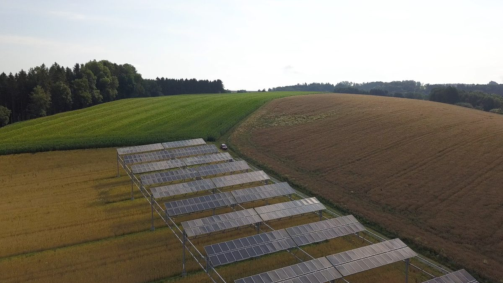

지방정부 RE100 토론서 영농형 태양광 협동조합 자부담 시군당 60억~150억 원 추정 나와…12월 시행 지원법 사업주 자격 제한도 과제로

경북도 과장, 청도 산사태 뒤 도내 산지 태양광 인허가 2,100건에서 400건 수준으로 줄었다고 밝혀…태양광 개발행위 전용 법률 제정·사전 소통과 이익 공유 주문도
지방정부가 재생에너지 공급을 직접 맡겠다는 구상을 놓고 열린 토론에서, 영농형 태양광 협동조합이 떠안을 자부담과 12월 시행 예정인 영농형 태양광 지원법의 사업주 자격 제한이 넘어야 할 과제로 거론됐다. 28일 서울 웨스틴조선에서 열린 '2026 아시아태평양 재생에너지 매칭포럼' 테마세션 'RE100, 지방정부가 책임지겠습니다'의 지정토론에서 두문택 경상북도 미래에너지수소과장은 2018년 청도 산사태 이후 산지 규제가 강화되면서 도내 산지 태양광 인허가가 2,100건에서 400건 수준으로 줄었다고 말했다. 두 과장은 영농형 태양광을 시군당 100MW 기준으로 추진하면 협동조합 자부담이 60억~150억 원에 이를 수 있다며 공기업과 민간 투자가 함께 들어오는 방안이 필요하다고 했고, 전용선로 비용은 분산에너지 특구 지정으로 지원받는 방안을 내놓았다. 김성우 솔라리스 변호사는 새 지원법이 사업주 자격을 제한하고 있어 외부 투자자가 참여할 수 있는 사업 구조를 설계해야 한다고 했고, 박현석 한국태양광공사협회 수석부회장은 지자체 도시계획심의에서 법령에 없는 기준이 적용되는 사례가 있다며 태양광 개발행위 전용 법률을 만들자고 제안했다. 손봉희 이클레이 한국사무소 부소장은 파주시 사례를 들어 사전 소통 부족이 주민 갈등의 주된 원인이라고 짚고 로드맵과 이익을 주민과 함께 나누라고 주문했다. 앞서 발표에 나선 이남오 함평군수는 빛그린국가산단을 RE100 산단 시범지구로 지정해 달라고 정부에 건의하고 있다고 밝혔고, 종합토론에서는 영농형 태양광 TF를 꾸려 규제를 점검하고 있으며 개발행위 전용 입법의 필요성을 중앙정부와 국회에 건의하겠다고 답했다.
시민에너지 관점
토론에서 나온 시군당 60억~150억 원이라는 자부담 추정은 농민과 주민이 협동조합으로 영농형 태양광의 주인이 되려 할 때 가장 먼저 부딪히는 벽이 돈이라는 점을 보여 준다. 독일 재생에너지법은 '시민에너지회사'를 의결권 대부분을 발전소 주변에 사는 주민이 갖고 어느 한 사람도 큰 몫의 의결권을 쥐지 못하는 조직으로 정의해, 바깥 자금이 들어와도 결정권은 지역에 남도록 했다. 외부 투자자를 들여야 사업이 빨라진다는 주장도 있지만, 투자자가 지분과 의결권을 가져가면 수익과 결정이 마을 밖으로 빠져나가고 토론에서 지적된 주민 갈등도 다시 커진다. 자부담의 빈자리는 공기업·지자체 출자와 공공 융자로 메우되 주민 협동조합이 다수 지분과 의결권을 지키는 구조를, 12월 시행에 맞춰 나올 세부 규정에 분명히 담아야 한다.
출처: 투데이에너지 2026-10-28 김원빈 원문 보기
地方政府RE100の討論で営農型太陽光の協同組合自己負担は市郡当たり60億～150億ウォンとの推計…12月施行の支援法の事業主資格制限も課題に
慶尚北道の課長、清道の土砂災害以降に道内の山地太陽光の許認可が2,100件から400件水準に減ったと説明…太陽光開発行為の専用法の制定、事前の対話と利益共有を求める声も
地方政府が再生可能エネルギーの供給を自ら担うという構想をめぐる討論で、営農型太陽光の協同組合が背負う自己負担と、12月施行予定の営農型太陽光支援法による事業主資格の制限が、乗り越えるべき課題として挙げられた。28日にソウルのウェスティン朝鮮で開かれた「2026アジア太平洋再生可能エネルギーマッチングフォーラム」のテーマセッション「RE100、地方政府が責任を持ちます」の指定討論で、トゥ・ムンテク慶尚北道未来エネルギー水素課長は、2018年の清道の土砂災害以降に山地規制が強まり、道内の山地太陽光の許認可が2,100件から400件水準に減ったと述べた。トゥ課長は、営農型太陽光を市郡当たり100MW基準で進めると協同組合の自己負担が60億～150億ウォンに達しうるとして、公企業や民間の投資が加わる方策が必要だとし、専用線路の費用は分散エネルギー特区の指定で支援を受ける案を示した。ソラリスのキム・ソンウ弁護士は、新しい支援法が事業主の資格を制限しているため、外部投資家が参加できる事業構造を設計すべきだと述べ、韓国太陽光工事協会のパク・ヒョンソク首席副会長は、自治体の都市計画審議で法令にない基準が適用される例があるとして、太陽光の開発行為に特化した法律をつくるよう提案した。イクレイ韓国事務所のソン・ボンヒ副所長は坡州市の例を挙げ、事前の対話不足が住民対立の主な原因だと指摘し、ロードマップと利益を住民と共有するよう求めた。これに先立って発表したイ・ナモ咸平郡守は、ビッグリーン国家産業団地をRE100産業団地のモデル地区に指定するよう政府に求めていると明らかにし、総合討論では営農型太陽光のタスクフォースを設けて規制を点検しており、開発行為の専用立法の必要性を中央政府と国会に提起すると答えた。
市民エネルギーの視点
討論で示された市郡当たり60億～150億ウォンという自己負担の推計は、農家と住民が協同組合として営農型太陽光の持ち主になろうとするとき、真っ先にぶつかる壁が資金であることを示している。ドイツの再生可能エネルギー法は「市民エネルギー会社」を、議決権の大半を発電所の周辺に住む住民が持ち、誰一人として大きな議決権を握れない組織と定義し、外部の資金が入っても決定権は地域に残るようにした。外部投資家を入れてこそ事業が早く進むという主張もあるが、投資家が持ち分と議決権を握れば、収益も決定も集落の外へ流れ出し、討論で指摘された住民対立も再び大きくなる。自己負担の穴は公企業・自治体の出資と公的融資で埋めつつ、住民の協同組合が過半の持ち分と議決権を守る仕組みを、12月施行に合わせて出される細部規定にはっきり盛り込むべきだ。
出典: Today Energy 2026-10-28 Kim Won-bin 原文を読む
地方政府RE100讨论会估算农光互补合作社自筹资金每个市郡达60亿至150亿韩元…12月施行的支持法限制业主资格也成课题
庆尚北道处长称清道山体滑坡后道内山地光伏审批从2,100件降至400件左右…与会者还呼吁制定光伏开发行为专门法律、事前沟通和利益共享
在围绕地方政府亲自承担可再生能源供应这一构想举行的讨论中，农光互补合作社须承担的自筹资金，以及预定12月施行的农光互补光伏支持法对业主资格的限制，被列为需要跨越的难题。28日在首尔威斯汀朝鲜酒店举行的“2026亚太可再生能源匹配论坛”主题会议“RE100，由地方政府负责”的指定讨论中，庆尚北道未来能源氢能处处长Doo Moon-taek表示，2018年清道山体滑坡后山地规制加强，道内山地光伏审批从2,100件降至400件左右。他说，若按每个市郡100MW推进农光互补，合作社的自筹资金可能达到60亿至150亿韩元，因此需要引入公企业和民间投资，并提出专用线路费用可通过指定分布式能源特区获得支持。Solaris律师Kim Sung-woo表示，新的支持法限制了业主资格，应设计让外部投资者能够参与的项目结构；韩国光伏工程协会首席副会长Park Hyun-seok指出，地方政府城市规划审议中存在适用法令之外标准的情况，建议制定光伏开发行为专门法律。ICLEI韩国办事处副所长Son Bong-hee以坡州市为例指出，事前沟通不足是居民冲突的主要原因，呼吁与居民分享路线图和收益。此前作主题发表的咸平郡守Lee Nam-oh表示，正在请求政府把光绿国家产业园区指定为RE100产业园区示范区；在综合讨论中他回答说，已组建农光互补工作组检查规制，并将向中央政府和国会建议制定开发行为专门立法。
市民能源视角
讨论中提出的每个市郡60亿至150亿韩元自筹资金估算表明，农民和居民想以合作社身份成为农光互补电站的主人时，首先撞上的墙就是资金。德国《可再生能源法》将“公民能源公司”定义为大部分表决权由电站周边居民持有、任何一人都不能掌握大份额表决权的组织，确保即使引入外部资金，决定权仍留在当地。有人主张只有引入外部投资者项目才能加快，但投资者一旦拿走股权和表决权，收益和决策都会流出村庄，讨论中指出的居民冲突也会再度加剧。自筹资金的缺口应由公企业和地方政府出资以及公共贷款来填补，同时让居民合作社守住多数股权和表决权，这一结构应在配合12月施行而出台的细则中明确写入。
来源: Today Energy 2026-10-28 Kim Won-bin 查看原文
Local government RE100 debate hears estimate of 6 to 15 billion won in cooperative self-funding per county for agrivoltaics; owner eligibility limits in support law taking effect in December also flagged
A Gyeongbuk official said mountain solar permits in the province fell from 2,100 to around 400 after the Cheongdo landslide; panelists also called for a dedicated solar development law, early dialogue and benefit sharing
In a debate over plans for local governments to take direct charge of supplying renewable energy, the self-funding burden on agrivoltaic cooperatives and the limits on owner eligibility in an agrivoltaics support law due to take effect in December were named as hurdles to overcome. At the designated debate of the theme session "RE100, Local Governments Will Take Responsibility" at the 2026 Asia-Pacific Renewable Energy Matching Forum, held on the 28th at the Westin Josun in Seoul, Doo Moon-taek, director of North Gyeongsang Province's future energy and hydrogen division, said that mountain-area regulation tightened after the 2018 Cheongdo landslide and solar permits on mountain land in the province fell from 2,100 to around 400. He said that if agrivoltaics were pursued at 100MW per city or county, a cooperative's own contribution could reach 6 billion to 15 billion won, so public enterprises and private investors need a way to take part, and he suggested that the cost of dedicated lines be supported through designation as a distributed energy special zone. Kim Sung-woo, a lawyer at Solaris, said the new support law restricts who can own projects, so business structures should be designed to let outside investors participate, while Park Hyun-seok, senior vice president of the Korea Photovoltaic Construction Association, said some local urban planning reviews apply standards not found in law and proposed a dedicated law on solar development permits. Son Bong-hee, deputy director of the ICLEI Korea Office, cited the case of Paju to say that poor advance communication is the main cause of conflict with residents and urged sharing roadmaps and benefits with them. Hampyeong County Governor Lee Nam-oh, who presented earlier in the session, said he is asking the government to designate the Bitgreen National Industrial Complex as an RE100 industrial complex pilot zone, and in the general discussion replied that the county has set up an agrivoltaics task force to review regulations and will press the central government and the National Assembly on the need for dedicated development legislation.
Citizen Energy View
The estimate of 6 billion to 15 billion won in self-funding per county shows that money is the first wall farmers and residents hit when they try to own agrivoltaics through a cooperative. Germany's Renewable Energy Sources Act defines a "citizen energy company" as one in which most voting rights are held by people living near the plant and no single member holds a large share of votes, so that decision-making stays local even when outside money comes in. Some argue that projects only move fast with outside investors, but once investors take the equity and the votes, both income and decisions leave the village and the resident conflicts raised in the debate grow again. The gap in self-funding should be filled with equity from public enterprises and local governments and with public loans, while resident cooperatives keep a majority of shares and votes, and that structure should be written clearly into the detailed rules to be issued for the December start.
Source: Today Energy 2026-10-28 Kim Won-bin Read the original